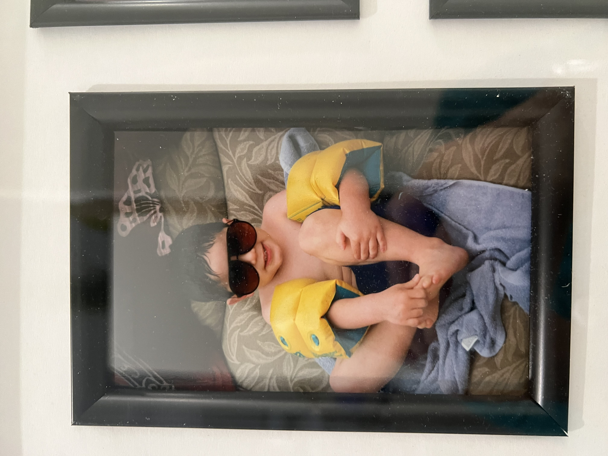

Cameraman Andres STATS:
Age: 27
Height: 6'3 (188cm)
Weight: 205lbs (92 kg)
Car: 2022 Hyundai Velociter (Manual Transmission)
Marital Status: Single
Shoe size: 13
Eye Color: Brown
Hair: Black
Sign: Virgo
Pets: Dog (medium size)
Job: Nurse
Kids: 0
Born: Arizona, USA
Favorite Casino game: Craps
Favorite Sport: Basketball
Favorite Food: Seafood
Hobbies: Cooking, Running, Stand up Comedy, Painting
Likes: Youtube, Movies, Hanging with Friends, Sports, Doggies
